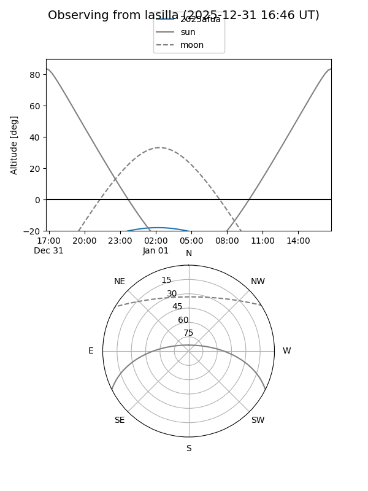
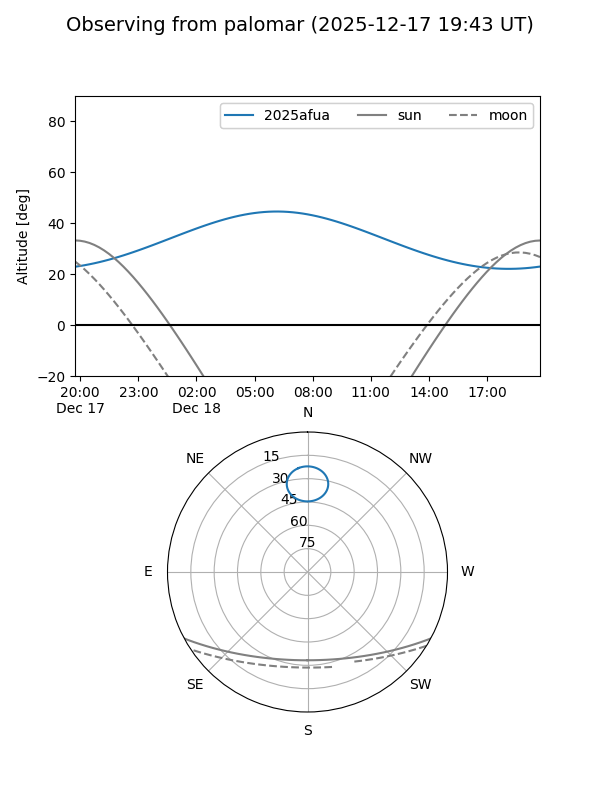
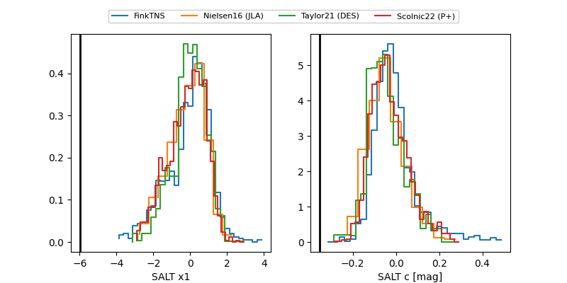

2025afua
Target 2025afua at 2025-12-18 11:17
Aliases and brokers:
FINK: fink-portal.org/ZTF25acfvldo
Lasair: lasair-ztf.lsst.ac.uk/objects/ZTF25acfvldo
ALeRCE: alerce.online/object/ZTF25acfvldo
TNS: wis-tns.org/object/2025afua
YSE: ziggy.ucolick.org/yse/transient_detail/2025afua
alt names
ZTF25acfvldo (ztf,fink_ztf)
2025afua (tns,yse)
Coordinates:
equatorial (ra, dec) = 61.4463,+78.66531
equatorial (HMS+DMS) = 04:05:47.12,+78:39:55.13
galactic (l, b) = (131.9197,+19.35285)
Photometry
last ztfg=19.73, ztfr=19.06
3 ztfg, 3 ztfr detections
Lightcurve

Visibility


Additional plots
